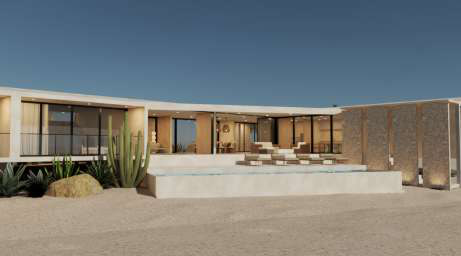
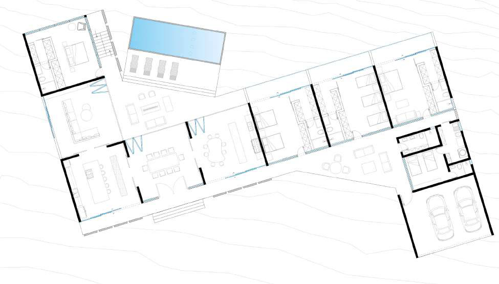
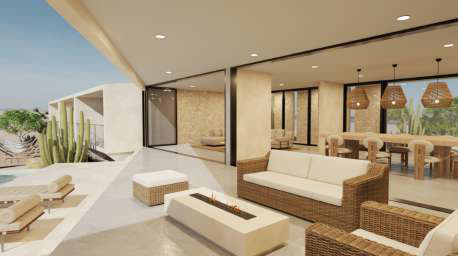
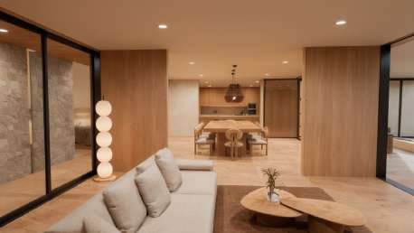
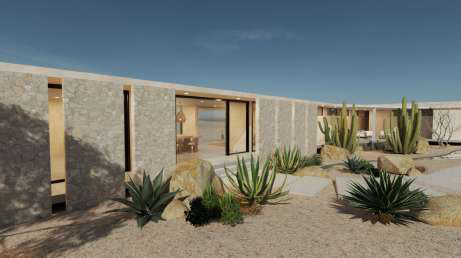
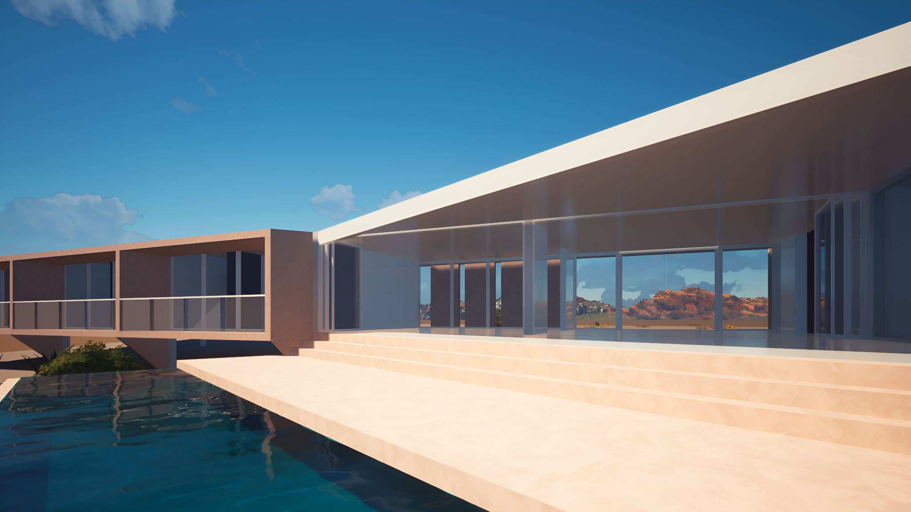

Hospitality, Baja California Sur, Mexico, 2025. A single-story casa-hotel in a V/boomerang plan around a courtyard infinity pool, with indoor-outdoor living and desert xeriscape.

A single-story casa-hotel around a courtyard infinity pool.
The plan is a V, or boomerang, wrapping indoor-outdoor living. Desert xeriscape: cacti and agave.
Zorro y Toro Casa Hotel is a single-story house-hotel in Baja California Sur, Mexico. The drawings show a V/boomerang plan around a courtyard infinity pool.
One wing holds kitchen, dining, living, and a primary suite. The other holds three ensuite bedrooms, a guest/staff room, and a two-car garage. Indoor-outdoor living opens to a pool deck and a fire-pit table. The site planting is desert xeriscape — cacti and agave.




